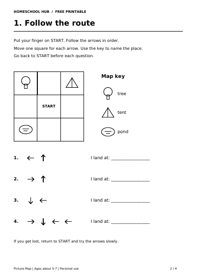

Free printable
Read a Picture Map: Follow the Arrows
Ages about 5–7
Use a key to find out what each map picture means. Start on the marked square, follow each arrow one square at a time, and name the place you reach.
Four A4 pages include a worked route, two 3×3 maps, an activity to find another route to the same place, and answers.
Try a 5–10 minute session for ages about 5–7. Print pages 2–3 in black and white. Keep the page upright and read one arrow at a time from left to right. Up points towards the top of the page.
An adult can read the instructions and name each direction while the child moves a finger and says the answer. Return to START before each route. Picture squares can be crossed. A pencil is optional.
Practise describing where things are with Positional Language or try Pencil Mazes for path tracing.
